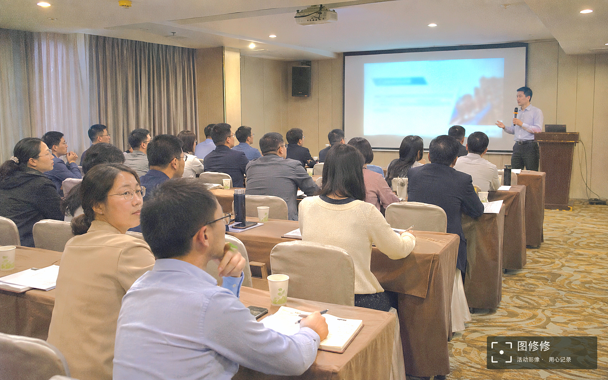
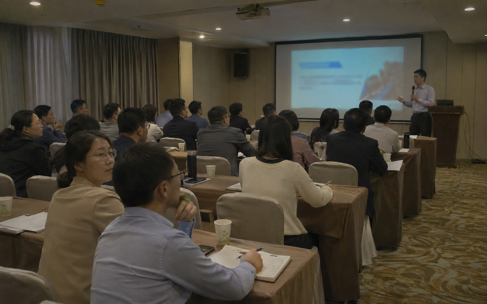

01 / 联网准备读取中
普通分享包
适合可以联网准备环境的用户。已含模型，首次下载独立运行库。
- 需已有 Python 3.12—3.14
- 首次准备需要联网及约 400 MB 空间
- 当前实测为 Mac Apple 芯片
查看文件校验值
正在读取活动照片 · 本地批量处理
培训、会议、人物与现场。
让 AI 助手陪你选样、修片、加水印，
确认好这一批，再处理下一批。
首次使用需准备 Python 与独立运行环境
照片留在本机原片保留先选样，后批量


测试原图优化＋水印拖动比较，也可使用方向键
生成的培训现场测试素材，经本地调色并合入右下角水印；拖动查看同一图像的处理前后。
样图暂未加载完成，请稍后重试或刷新页面。
不同活动、不同灯光，分别选样。确认方案、强度和水印后，再按这一批的方向处理。
原文件单独保留，先检查尺寸、方向和色彩依据。处理结果另存，不覆盖原件。
从实际照片中选代表场景。会议全景、不同灯光、人物近景，条件不同就补样。
先比较原片和修图效果，再检查同一张照片上的三版水印。强度可以微调，效果由你决定。
在确认范围内继续处理。遇到新条件或不可靠选区，会暂停相应处理并提示复核。
肤色与磨皮范围分别保存。额头、面颈和肩部需要连续处理；眼眉、嘴唇与头发需要排除。远景小脸或五官不可靠时，暂缓相关连续皮肤的磨皮，再进入复核。
模型负责初选与细化，不能保证每张照片都准确。头发、衣物误选、遮挡和远处人物，仍可能需要复核。
培训场景由生成素材作测试底图，经本地像素调色与水印合成；人像展示既有实测试修与候选范围。
两种包都包含四个模型。普通包首次联网准备运行库；对应平台的离线包带齐运行库。准备一次，之后在本机复用。
正在读取版本与下载信息……
两个包都不包含 Python 安装程序。Windows 尚未适配；Linux、Intel Mac 未在本轮实机验证。网站只提供介绍与下载，修图在你自己的电脑上进行。
不用先研究全部参数。把环境准备好，把照片交给支持本地 Skill 的 AI 助手，然后一起看样片。
本轮已验证的环境是 Mac Apple 芯片、Python 3.14。普通包支持准备 Python 3.12—3.14 环境，其他平台或版本仍需在你的机器上自检。
如果没有 Python，请先安装受支持版本。离线包也需要已有 Python 3.14，不是一个独立 App 安装包。
保留完整的 event-photo-retouch 文件夹。Mac 用户打开包内的“一键准备.command”，阅读提示后再同意准备。
普通包此时需要联网下载运行库；匹配环境的离线包优先使用随包运行库。安装在用户的独立缓存中，不修改系统 Python，也不上传照片。
如果系统提示无法运行，或准备未完成，请把提示交给 AI 助手，按包内《开始使用》检查。不要跳过错误就开始批量处理。
本轮使用 Codex 完成本地流程。打开 Codex 的一个照片工作目录，将解压文件夹路径交给助手，并说明：“请将这个完整 Skill 安装到当前工作目录的 .agents/skills/event-photo-retouch，保留已有同名目录，完成首次环境自检后再处理照片。”
安装后用 $event-photo-retouch 明确调用；未出现在技能列表时重启 Codex。其他助手需先核对本地 Skill 与脚本能力。Codex 官方加载位置说明 ↗
把照片文件夹路径和下面这句话一起发给助手。先看样片、参数和水印，再决定当前批次的最终效果。
请使用图修修 Skill 处理我提供的照片文件夹。先按场景选样，展示原片与试修效果、参数和三版水印预览；等我确认后再批量另存，保留原片。若环境尚未准备，请先说明所需空间、联网情况，并经我同意后准备。
照片处理在本机完成。普通包首次准备会下载运行库，缺失模型时按授权准备官方模型；这与上传照片是两件事。介绍网站不提供上传照片的功能。
环境首次准备成功后复用。选区结果按原片、方向尺寸、模型和算子版本缓存；拉动修图参数时复用已有选区。原片或相关处理版本改变时，需要重新计算与核对。
在已经确认的场景与处理范围内可以继续批量。新灯光、新场景、未覆盖条件或不可靠的皮肤范围会进入补样与复核；不会把某一张照片的偏好直接套到所有活动。
不能。模型负责自动初选、细化和异常提示。远景小脸、遮挡、侧脸或复杂光线仍有局限；技术核对未通过时暂缓磨皮，保留能够完成的调色。
这个网站用于查看真实效果、下载 Skill 与阅读指引。下载后，由具备本地文件和运行能力的 AI 助手在你的电脑上启动修图工作台。